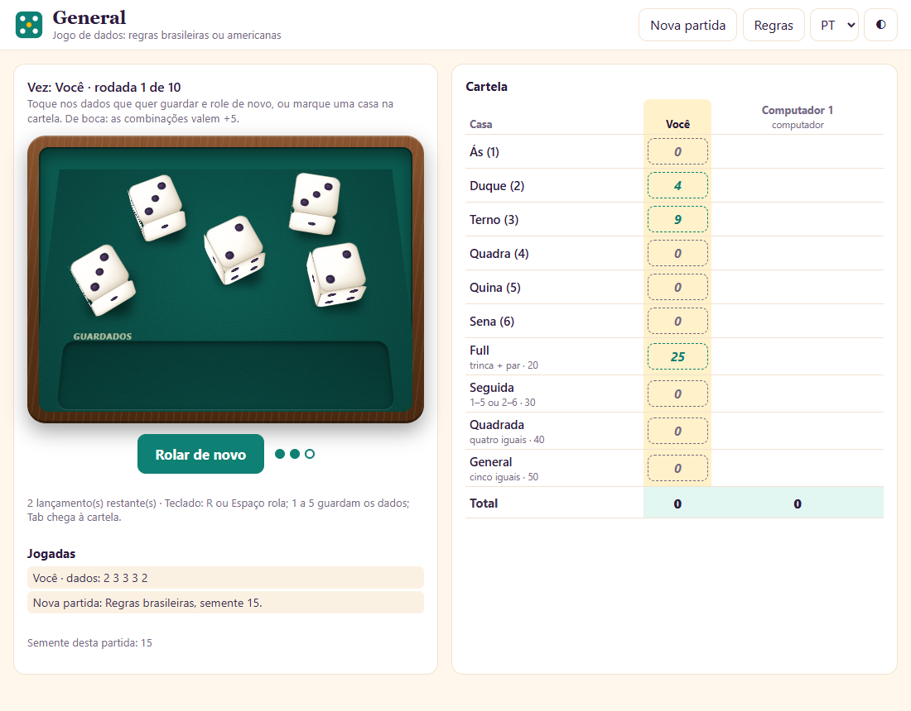
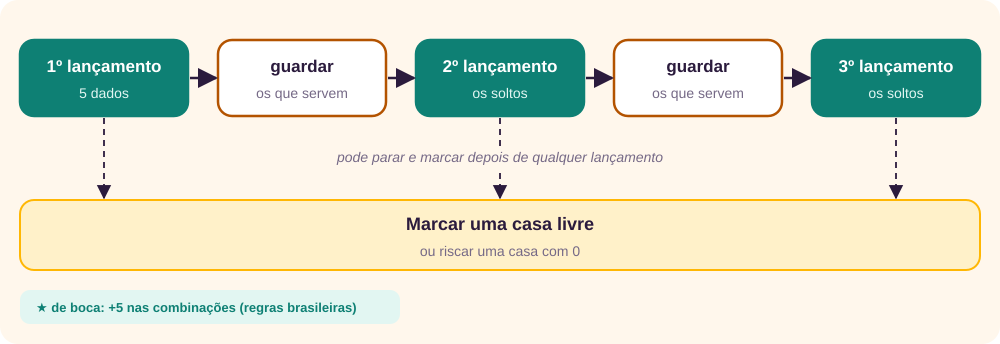
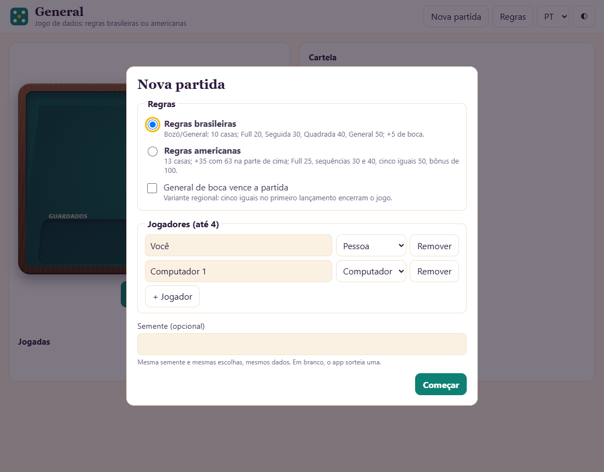
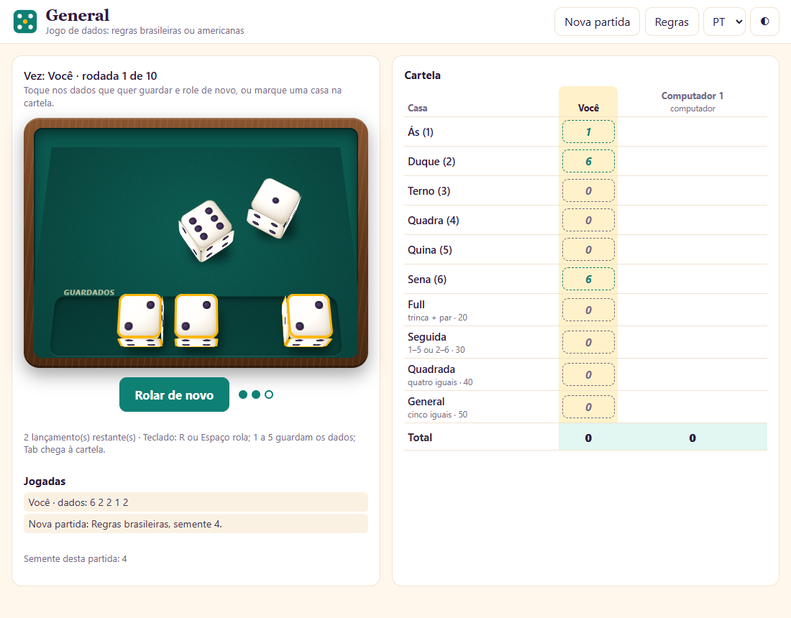
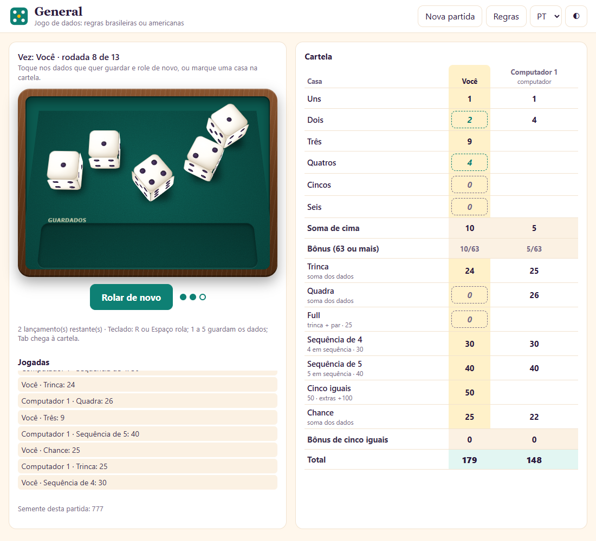
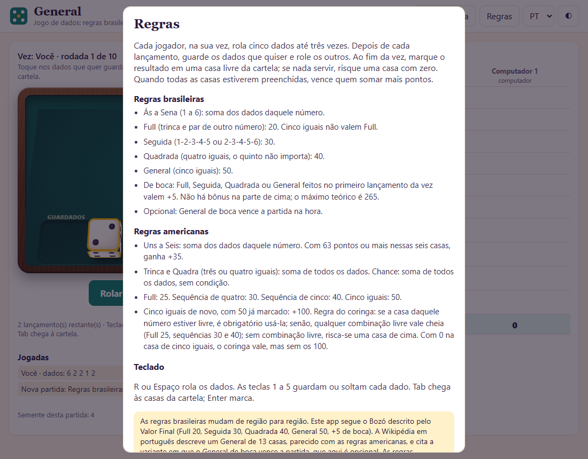
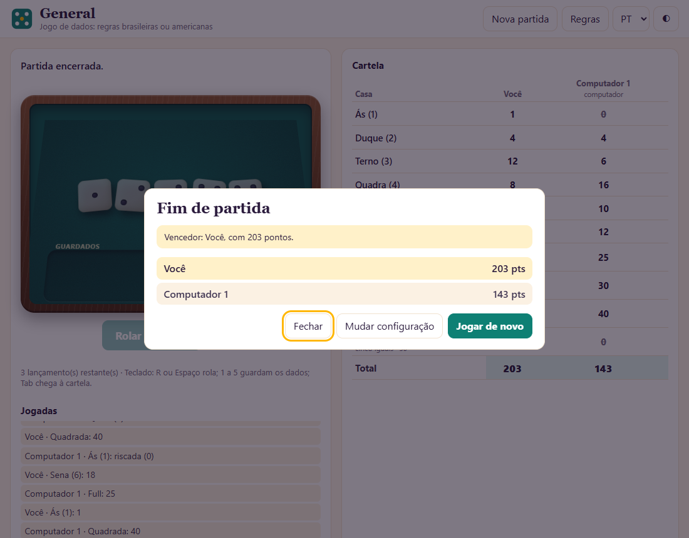
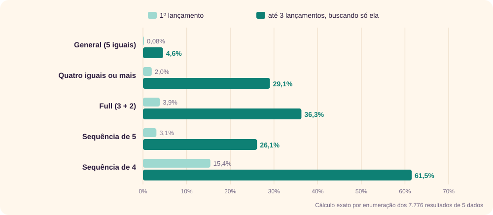

O jogo
General é um jogo de cinco dados. Na sua vez, você rola os dados até três vezes, guarda os que servem e, no fim, marca o resultado em uma casa da cartela. Cada casa só pode ser usada uma vez, e quem somar mais pontos quando a cartela estiver cheia vence. A graça está na decisão: guardar o par ou arriscar a sequência? Marcar 8 pontos agora ou riscar uma casa que quase nunca rende?
O app deste site joga General com as regras brasileiras ou com as americanas, contra o computador ou entre amigos no mesmo aparelho. [1] É um único arquivo HTML, que funciona sem internet e em quatro idiomas.

Uma breve história
Os jogos de cinco dados com cartela formam uma família com muitos nomes: General, Bozó, Generala, Yacht, Yatzy e outros. A origem exata não é conhecida, e as fontes consultadas dão poucas datas.
Dados de pôquer
Uma raiz da família é o Poker Dice, jogado com dados que trazem figuras de cartas de baralho no lugar dos pontos. [8] As combinações do General lembram as do pôquer: trinca, full, quadra, sequência. Quando a versão americana foi registrada, em 1956, Edwin S. Lowe a classificou como um “jogo de dados de pôquer”. [3]
Yacht, 1938
O registro mais antigo citado é o do Yacht, descrito em The Complete Book of Games, de Clement Wood e Gloria Goddard, publicado em 1938. [2] O Yacht é de domínio público e não tinha bônus na parte de cima da cartela.
O jogo americano, 1956
Em 1956, o empresário Edwin S. Lowe lançou nos Estados Unidos a versão comercial que deu origem às regras americanas de hoje. Segundo a Hasbro, o jogo foi criado por um casal canadense anônimo, que o jogava com amigos no seu iate; Lowe teria ficado com os direitos em troca de mil jogos de presente. Em 1973, a Milton Bradley comprou a empresa de Lowe. [3] Em relação ao Yacht, essa versão tem o bônus de 35 pontos para quem soma 63 na parte de cima, o bônus de 100 para cinco iguais repetidos e a regra do coringa. [2]
Yatzy, Generala e General
- Yatzy é a versão mais popular nos países nórdicos. Tem casas de um par e dois pares, e o bônus por 63 pontos vale 50. [4]
- Generala é a versão de língua espanhola. Escalera, Full e Póker valem 5 a mais quando saem no primeiro lançamento (“servidos”), e a Generala servida vence a partida na hora. [5]
- General é o nome mais comum no Brasil. A Wikipédia em português diz que o jogo também ficou conhecido como Yam, pela popularidade de uma versão vendida pela Grow nos anos 1970. [6]
- Bozó é a variante do Centro-Oeste, muito jogada em Mato Grosso e Mato Grosso do Sul, com dados sacudidos num copo de couro ou de chifre de boi. Segundo um artigo da UFMS citado pelo site Valor Final, as regras do Bozó nasceram de alterações do General. [6] [7]
↑ Voltar ao topoDivergências nas fontes. A Wikipédia em inglês chama a Generala de “latino-americana” em um artigo e diz, em outro, que o Yacht é seu “primo inglês”, sem dizer qual veio antes. A pontuação da Generala na Wikipédia em português difere da que aparece na Wikipédia em espanhol. Nenhuma das fontes consultadas dá data de origem para a Generala, o General ou o Bozó. [2] [3] [5] [6]
As regras
O que vale nas duas versões

- Cinco dados e até três lançamentos por vez. Entre um lançamento e outro, você guarda os dados que quiser e rola o resto. No app, um dado guardado pode ser solto antes do lançamento seguinte.
- No fim da vez, marque uma casa livre. Se o resultado não servir para nenhuma, risque uma casa com zero. Não dá para passar a vez sem marcar.
- A partida acaba quando todos completam a cartela. Vence o maior total.
Regras brasileiras (Bozó/General)
O app segue o Bozó descrito pelo Valor Final, com 10 casas. [7]
| Casa | Condição | Pontos | De boca |
|---|---|---|---|
| Ás, Duque, Terno, Quadra, Quina, Sena | dados com 1, 2, 3, 4, 5 ou 6 | soma desses dados | — |
| Full | três de um número e dois de outro | 20 | 25 |
| Seguida | 1-2-3-4-5 ou 2-3-4-5-6 | 30 | 35 |
| Quadrada | quatro iguais (o quinto não importa) | 40 | 45 |
| General | cinco iguais | 50 | 55 |
- De boca é a combinação que sai no primeiro lançamento da vez, antes de rolar qualquer dado de novo. Ela vale 5 a mais.
- Cinco iguais não contam como Full.
- Não há bônus na parte de cima. O máximo possível é 265: 105 nas casas de número (5 + 10 + 15 + 20 + 25 + 30) mais 160 nas combinações de boca (25 + 35 + 45 + 55).
- Variante opcional: General de boca vence a partida na hora. A Wikipédia em português registra essa regra no Bozó; o Valor Final não a menciona. [6] [7]
Regras americanas
São 13 casas, com bônus na parte de cima e regra do coringa. [3]
| Casa | Condição | Pontos |
|---|---|---|
| Uns a Seis | dados com aquele número | soma desses dados |
| Bônus | 63 pontos ou mais em Uns a Seis | +35 |
| Trinca | três iguais ou mais | soma dos cinco dados |
| Quadra | quatro iguais ou mais | soma dos cinco dados |
| Full | três de um número e dois de outro | 25 |
| Sequência de 4 | quatro números seguidos | 30 |
| Sequência de 5 | cinco números seguidos | 40 |
| Cinco iguais | cinco dados iguais | 50 |
| Chance | qualquer resultado | soma dos cinco dados |
Cinco iguais de novo. Se a casa de cinco iguais já tem 50, cada novo cinco iguais dá +100. Vale também a regra do coringa:
- Se a casa daquele número (por exemplo, Quatros para cinco 4) estiver livre, você é obrigado a usá-la.
- Se não estiver, pode usar qualquer casa de baixo livre, e Full, Sequência de 4 e Sequência de 5 valem cheio (25, 30 e 40).
- Sem casa de baixo livre, você risca uma casa de cima.
Se você riscou a casa de cinco iguais com zero, o coringa continua valendo, mas sem os 100.
↑ Voltar ao topoComo jogar no app
1. Monte a partida
Na primeira visita, o app abre a janela Nova partida. Escolha as regras, marque a variante do General de boca se quiser, e monte de 1 a 4 jogadores, cada um como Pessoa ou Computador. Pessoas jogam no mesmo aparelho, uma de cada vez.

A semente define a sequência dos dados. Com a mesma semente e as mesmas escolhas, a partida se repete igual, o que serve para desafiar alguém com os mesmos dados. Em branco, o app sorteia uma semente, que aparece embaixo do histórico.
2. Role e guarde
- Clique em Rolar os dados. Os dados caem na mesa e param em lugares e ângulos diferentes.
- Toque nos dados que quer guardar. Eles vão para a canaleta Guardados, com borda dourada. Toque de novo para soltar.
- Clique em Rolar de novo. Só os dados soltos são rolados. As três bolinhas ao lado do botão mostram quantos lançamentos restam.

3. Marque uma casa
Depois de qualquer lançamento, a sua coluna da cartela mostra, em itálico e com borda tracejada, quanto cada casa livre vale com os dados atuais. Clique na casa escolhida para marcar. Uma casa com 0 é um risco: a casa fica usada com zero pontos.

4. Consulte as regras e veja o resultado
O botão Regras abre o resumo das duas versões, com as fontes. No fim da partida, o app mostra a classificação e o recorde de cada regra entre os jogadores Pessoa.


Atalhos e detalhes
- Teclado: R ou Espaço rola; as teclas 1 a 5 guardam ou soltam cada dado; Tab chega às casas da cartela, e Enter marca.
- Partida salva: o jogo fica salvo no navegador. Feche e abra de novo para continuar de onde parou.
- Idioma e tema: o seletor do topo troca o idioma, e o botão ◐ alterna entre os temas claro e escuro.
- Computador: ele espera os dados pararem antes de decidir, e os dados que ele guarda também vão para a canaleta.
As probabilidades
Cinco dados de seis faces têm 7.776 resultados possíveis (65). Contando um por um quantos formam cada combinação, chega-se às chances exatas do primeiro lançamento. Para a vez inteira, o cálculo testa todas as formas de guardar os dados e fica com a melhor para buscar uma única combinação. Os números abaixo vêm de um script que faz essa contagem completa, sem simulação.

| Combinação | 1º lançamento | Até 3 lançamentos |
|---|---|---|
| General (cinco iguais) | 1 em 1.296 (0,08%) | 4,6% |
| Quatro iguais ou mais | 2,0% | 29,1% |
| Full | 3,9% | 36,3% |
| Sequência de 5 | 3,1% | 26,1% |
| Sequência de 4 | 15,4% | 61,5% |
Algumas contas rápidas para usar na mesa, com dois lançamentos pela frente:
- Quatro iguais guardados, buscando o General: 1 − (5/6)² ≈ 30,6%.
- Sequência aberta de quatro (2-3-4-5), buscando a de cinco: serve o 1 ou o 6, então 1 − (4/6)² ≈ 55,6%.
- Sequência com buraco (1-2-3-5), buscando a de cinco: só o 4 serve, então 1 − (5/6)² ≈ 30,6%. Por isso a sequência aberta vale mais.
Esses números supõem dados honestos e mostram a chance de uma combinação de cada vez. Na partida, você quase nunca busca uma só: decide entre várias ao mesmo tempo.
↑ Voltar ao topoEstratégias
O que o computador do app mostra
Para ter uma referência, coloquei o computador do app para jogar sozinho 1.000 partidas em cada regra, com sementes diferentes. Ele escolhe os dados guardados calculando a melhor média para a vez atual, mas não planeja a partida inteira, então não joga de forma ótima.
| Medida | Brasileiras | Americanas |
|---|---|---|
| Média de pontos do computador | 144,2 | 240,2 |
| 80% das partidas ficaram entre | 103 e 194 | 181 e 312 |
| Jogador ingênuo (um lançamento, maior pontuação imediata) | 55,1 | 111,6 |
| Partidas em que marcou General / cinco iguais | 25,6% | 33,8% |
| Partidas com bônus dos 63 | — | 30% |
| Casa mais riscada com zero | General (74,4%) | Cinco iguais (66,2%) |
São números de simulação, com as regras e o gerador de dados do app. Eles medem esse computador, não jogadores humanos. A faixa vai do 10º ao 90º percentil. A lição principal está na diferença para o jogador ingênuo: rolar de novo e guardar bem mais que dobra a pontuação.
Princípios gerais
- Decida o alvo depois de cada lançamento. Olhe as casas livres e pergunte o que o lançamento atual favorece. Um par de 6 com Sena e Quadrada livres pede outra decisão que o mesmo par com só a Seguida livre.
- Prefira jogadas que servem para mais de uma casa. Três iguais podem virar Quadrada, General, Full ou uma boa casa de número.
- Escolha onde riscar. Riscar faz parte do jogo. Risque a casa que menos renderia no resto da partida, não a primeira que aparecer.
- No fim, conte as vezes que faltam. Com três vezes e três casas difíceis, garanta a mais provável primeiro.
Nas regras brasileiras
- As combinações têm valor fixo. Quatro 1 valem os mesmos 40 na Quadrada que quatro 6. Guarde os números altos para as casas de número e use qualquer quadra para a Quadrada.
- Ás é o lugar natural para riscar. No máximo vale 5. O computador do app riscou o Ás em 23,2% das partidas.
- Não persiga o General a qualquer custo. Buscando só ele, a chance numa vez é de 4,6%. Com uma quadra guardada, sobe para 30,6% em dois lançamentos, e se falhar você ainda tem a Quadrada.
- Aproveite o de boca. Uma combinação no primeiro lançamento vale 5 a mais. Se a casa está livre e a combinação é rara, como Seguida ou Quadrada, costuma valer a pena marcar logo.
- O Full é a combinação mais barata (20). Ela costuma servir de reserva quando uma trinca não vira quadra.
Nas regras americanas
- O bônus de 35 é decisivo. 63 é exatamente três dados de cada número (3 + 6 + 9 + 12 + 15 + 18). Quatro 5 ou quatro 6 compensam um Uns ou Dois fraco. O computador do app só alcançou o bônus em 30% das partidas, e é aí que uma pessoa atenta pode superá-lo.
- Chance é a rede de segurança. Guarde-a para uma vez ruim, de preferência com soma alta.
- A Sequência de 4 é a combinação mais fácil: 61,5% numa vez buscando só ela.
- Cinco iguais vale mais que 50. Com a casa marcada com 50, cada novo cinco iguais rende +100 e ainda vale como coringa.
- Trinca e Quadra somam todos os dados. Fazer a trinca com 6 vale mais que com 1, então não as gaste com números baixos no começo.
Erros comuns
“Saiu um par, então guardo o par.”
Nem sempre. Com 2-3-4-5-5 e a Seguida livre, guardar 2-3-4-5 dá 55,6% de chance de 30 pontos em dois lançamentos. Compare com o que o par de 5 renderia antes de decidir.
“Ainda tenho lançamentos, então tenho que usar.”
Rolar de novo pode estragar uma combinação feita. E, nas regras brasileiras, quem marca no primeiro lançamento ganha os 5 de boca.
“Risco a primeira casa que aparece.”
Riscar a Sena no começo custa caro. Quando for riscar, escolha a casa de menor valor esperado: o Ás, ou o General nas últimas vezes.
“Os dados estão devendo um 6.”
Dados não têm memória. Cada lançamento é independente dos anteriores.
“Cinco iguais também valem Full.”
Nas regras brasileiras do app, não. Nas americanas, só pela regra do coringa, com a casa de cinco iguais já usada.
Glossário
| Termo | Significado |
|---|---|
| Ás, Duque, Terno, Quadra, Quina, Sena | Casas dos números 1 a 6 nas regras brasileiras. |
| Bônus | Nas regras americanas, +35 por 63 pontos em Uns a Seis, e +100 por cinco iguais repetidos. |
| Bozó | Variante do General jogada no Centro-Oeste do Brasil. |
| Cartela | Folha com as casas de cada jogador. |
| Chance | Casa americana que aceita qualquer resultado e soma os dados. |
| Coringa | Regra americana para cinco iguais repetidos. |
| Copo | Recipiente onde se sacodem os dados; no Bozó, de couro ou de chifre. |
| De boca (servida) | Combinação feita no primeiro lançamento da vez. |
| Full | Três dados de um número e dois de outro. |
| General | Cinco dados iguais; também o nome do jogo. |
| Quadrada | Quatro dados iguais, nas regras brasileiras. |
| Riscar | Marcar zero numa casa porque nenhuma outra serve. |
| Seguida | Sequência de cinco números: 1-2-3-4-5 ou 2-3-4-5-6. |
| Semente | Número que define a sequência dos dados no app. |
Revisão rápida
1. Nas regras brasileiras, quanto vale um Full feito no primeiro lançamento?
25: os 20 do Full mais 5 de boca.
2. Você tem 6-6-6-6-2 no segundo lançamento, nas regras brasileiras, com Quadrada e General livres. O que fazer?
Guardar os quatro 6 e rolar o último dado: há 1 chance em 6 de General (50). Se não sair, a Quadrada ainda vale 40.
3. Por que 63 é o número mágico das regras americanas?
Porque é a soma de três dados de cada número (3 + 6 + 9 + 12 + 15 + 18), e com 63 você ganha +35.
4. Qual sequência de quatro rende mais para buscar a de cinco: 2-3-4-5 ou 1-2-3-5?
2-3-4-5, que aceita o 1 ou o 6: 55,6% em dois lançamentos, contra 30,6% da 1-2-3-5.
5. Qual é a chance de General no primeiro lançamento?
1 em 1.296, cerca de 0,08%.
6. Nas regras americanas, você tira cinco 3 com Cinco iguais já marcado com 50 e a casa Três livre. O que acontece?
Você ganha +100 e é obrigado a marcar a casa Três, com 15 pontos.
7. Para que serve a semente?
Ela repete a mesma sequência de dados. Com a mesma semente e as mesmas escolhas, a partida sai igual.
8. Qual é o máximo de pontos nas regras brasileiras do app?
265: 105 nas casas de número e 160 nas quatro combinações de boca.
Referências
- Giovani Perotto Mesquita, “General”, jogo deste site, giovanipm.github.io/General.html.
- Wikipedia, “Yacht (dice game)”, acesso em 13/11/2026, en.wikipedia.org/wiki/Yacht_(dice_game). Cita Clement Wood e Gloria Goddard, The Complete Book of Games, Halcyon House, 1938.
- Wikipedia, “Yahtzee”, acesso em 13/11/2026, en.wikipedia.org/wiki/Yahtzee. A história do casal canadense é atribuída pela própria página à Hasbro.
- Wikipedia, “Yatzy”, acesso em 13/11/2026, en.wikipedia.org/wiki/Yatzy.
- Wikipedia, “Generala”, em espanhol, acesso em 13/11/2026, es.wikipedia.org/wiki/Generala. A página aceita também a escalera 3-4-5-6-1 e cita uma variante com Generala de 60 pontos.
- Wikipédia, “General (jogo)”, acesso em 13/11/2026, pt.wikipedia.org/wiki/General_(jogo). A página não tem notas de rodapé, e a pontuação que ela dá para a Generala difere da referência 5.
- Valor Final, “Bozó”, acesso em 13/11/2026, valorfinal.com.br/jogos/bozo. Site de jogos online; cita o artigo “A matemática do jogo Bozó”, de Thatiana Sakate Abe (UFMS), sem data nem link, que não foi consultado.
- Wikipedia, “Poker dice”, acesso em 13/11/2026, en.wikipedia.org/wiki/Poker_dice.